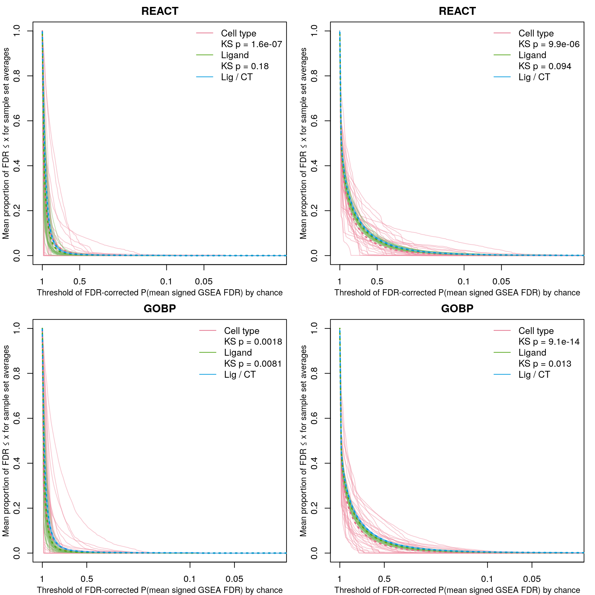
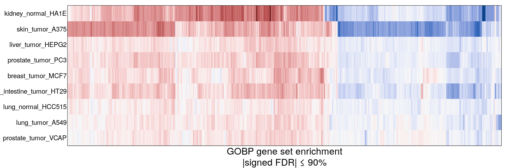
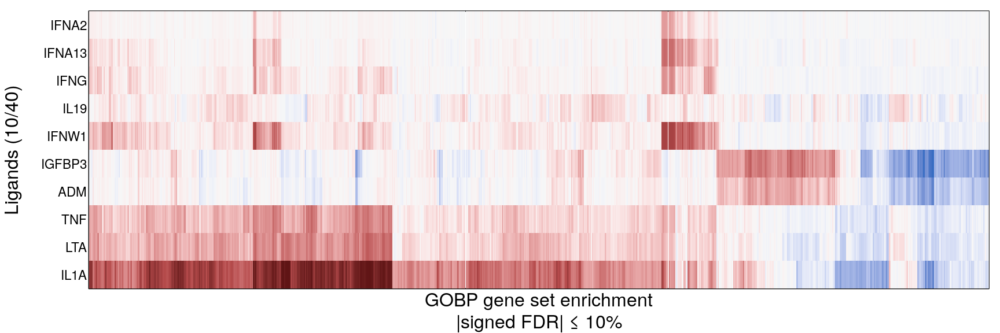
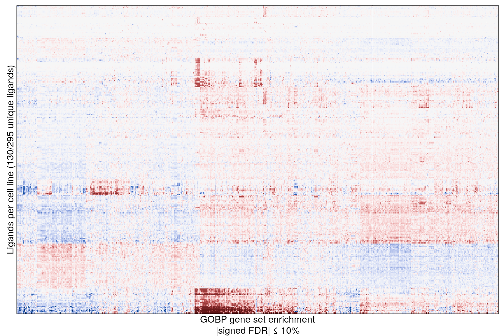

Since number of samples being averaged was causing artifacts, downsampled to averaging 5 randomly selected samples from each sample set. Repeated enough times to cover the largest set once.
Left: FDR-correction for all sample sets (ie. cell types / ligands) together, per downsample.
Right: FDR-correction per sample set, per downsample.



